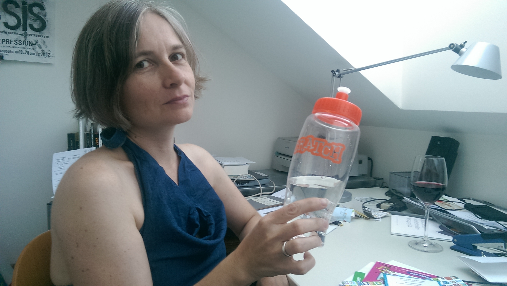
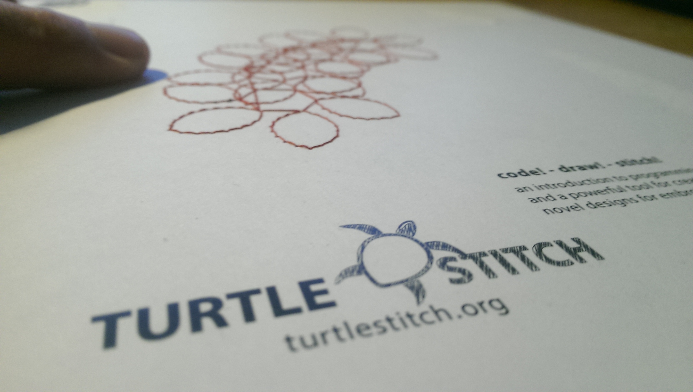

Episode 000: Andrea Mayr about Scratch 2016 conference and Turtlestitch

Andrea Mayr. Image rights: cc-by-sa 4.0, Horst JENS

Turtlestitch. Image rights: cc-by-sa 4.0, Horst JENS
- episode: 000
- slug: 20160828_andrea_mayr
- date: 2016-08-28
- duration (hh:mm:ss): 0:42:31
- speaker: Andrea Mayr, Horst JENS
- location: Vienna, Austria
- geo: lat: 48.201975, long: 16.334691
- language(s): english
- license: creative-commons cc-by 4.0
- tags: programming, snap, scratch, conference, turtlestitch, stitching, cam, art, visual-programming, business
description
Andrea Mayr tells about her visit at the Scratch conference 2016 in Boston and about the state of ther turtlestitch project, visual programming of stitching machines and art.
Links:
audio files
https://archive.org/details/andrea_mayr_boston2016